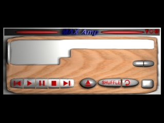

3DStudio
As detailed in the auto-biographical essay found on the bio page, I taught myself 3DStudio while an independent study student at Linganore High School. I worked a few excersices from a book, then set out to create this guitar. Because I was learning the program, and because Version 2 for DOS required all complex objects to be lofted and smoothed manually, it took me three months of class time to finnish the project. Working from a magazine advertisement with tracing graph paper, I modeled this guitar after my dream axe, the Parker Fly. The body texture on the lower model (the final render) is a wood grain base overlayed with images of fire.
Nearly a year ago, a friend of a friend
asked that I create a poster for his son. His only requirenments were that it have a question mark and the word
Enigma, the title of this piece, on it. Having nothing more to go on, I used 3DS boolean commands to cut
the letters out of a smoothed, glass textured question mark. Because I didn't feel this had enough complexity,
I added swirling miniature question marks in the dot at the bottom. I am pleased with the organic look of the glass
- it gives the appearance of putty smeared on a pallette. Click to see the enlarged image.
This uncomple project is a tentative skin for the popular windows mp3 player, Winamp. I grew tired of seeing redesigns of the user interface that were simply a few photoshop programs applied to the original and decided to create a wholly new skin in 3ds. This proved to make the final integration within the software more difficult than I cared to tackle on a whimsical project so I have put it on the back burner.

The father of a girl that I went to high school with asked me to show him the capabilities and possibly instruct him on the use of 3DS because he was considering using it to illustrate some scientific material that he was publishing. He decided instead to use Mathmatica instead, but I still have this rendering of what he called microfields. They consist of a circle, arrayed around a point a set outside the edge on the x/y plane. The complete shape is then rendered around the original point (it's center) in all directions. This yields a strange ball shape that if arrayed the proper number of times becomes nearly solid. For visualization's sake, I have arrayed this only on the x/y plane around the origin to start, then around the x-axis for depth. This is the only chance I have had to work to set specifications in 3DS, and I found the challege intriguing.
{kind=link}
{kind=link}
{kind=link}
{kind=link}
{kind=link}